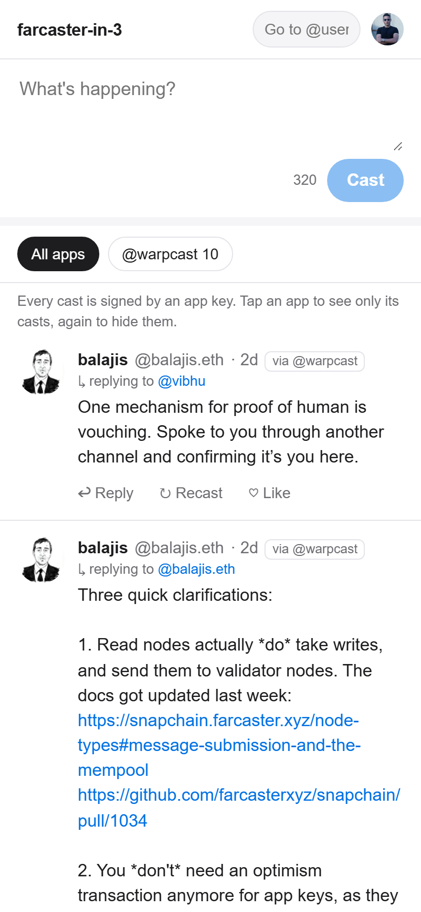

在你租的服务器上跑一个 Snapchain read node（只读节点），再用一个只跟它通信的客户端发帖。不需要 API key，也不需要任何人批准。
./fc3 provision./fc3 node./fc3 client2026 年 10 月在主网上完整跑通：从零同步一个节点，再通过它发出第一条 cast。
另外还要等节点自己同步几个小时。你需要 Node.js 20 或更高版本、git、一个 Azure、AWS 或 Hetzner 账号，以及一个 Farcaster 账号。第一次请用测试账号。
只想先看看？直接在浏览器里在线试用客户端，数据来自我的节点，什么都不用装。
git clone https://github.com/Sats100M/farcaster-in-3
cd farcaster-in-3
az login # 或者 aws login，或者在 .env 里设置 HCLOUD_TOKEN
./fc3 provision --provider azure --hours 48它会先显示价格，经你确认后才创建任何资源：一台 4 vCPU、16 GB 内存、2 TB 硬盘的服务器，并开放 Snapchain 用到的端口。--hours 48 会在两天后自动删除服务器，忘了关也不会一直扣费。fc3 会记住这台服务器，之后不用再输入它的地址。Windows 上请输入 .\fc3。
./fc3 node --fid <your-fid>
./fc3 status # 直到显示 "in sync"通过 SSH 安装 Docker 和官方 Snapchain 节点，给它的 API 加上 HTTPS，然后开始同步。第一次同步要下载约 470 GB 的快照，需要几个小时。FID 只用来决定每周自动升级是星期几。
./fc3 client
它会安装客户端，只问一次你的助记词，用它给客户端生成一个专属的 app key（应用密钥），然后立刻把助记词丢掉，并在浏览器里打开客户端：看动态、发帖、回复、点赞、转发、关注，还能按应用筛选帖子。所有请求只发给你自己的节点。
不想输入助记词？用 ./fc3 client --wallet：它会在你的电脑上打开一个页面，由 MetaMask、Rabby 或 Coinbase Wallet 来签名，助记词始终留在钱包里。
更喜欢命令行？同一个客户端也可以这样用：
./fc3 feed ./fc3 cast "posting from my own node" ./fc3 follow dwr ./fc3 like 3/0x… ./fc3 feed --hide-app <app>
./fc3 client --lan
它会打印一个二维码。在同一个 Wi-Fi 下用手机扫码就能登录。app key 一直留在你的电脑上，每个请求都要密码，所有读写依然只经过你自己的节点。

对待助记词，要像对待 rm -rf 一样小心。谁拿到它，谁就能控制你的账号。只把它粘贴到你读过代码或者信得过的软件里。这个客户端只在内存里用它签一条消息，既不保存，也不会把它发送到任何地方。你可以自己检查：整个客户端只有几个短文件。
第一次尝试？请用测试账号。如果某个应用支持委托签名（delegated signing），也就是在已经登录你账号的应用里批准它的密钥，优先用这种方式：助记词不用离开你的手机。如果你的电脑上装了浏览器钱包，--wallet 就很接近这种方式：由钱包签名，助记词根本不会交给这个客户端。
用完了？./fc3 destroy 会删除所有资源，计费随之停止。帮别人测试？VOUCHER.md 里有一份检查清单。用 AI 编程助手？让它读 AGENTS.md，它不会碰你的助记词。
Farcaster 把一个社交网络拆成三层，分别由不同的人来运行。就算某个 app 封了你，或者干脆关门了，你的账号、关注者和 cast（帖子）都还在。
你的账号编号、拥有这个账号的钱包，以及你已付费的存储空间。
每一条 cast、每个点赞和关注，都是一条小小的签名消息，由每个节点保存。
你刷的信息流、你点的按钮。也包括这个仓库里的客户端。
你的账号编号，由 Optimism 上的 ID Registry 合约分配。像 @dwr 这样的用户名是另一个独立的标签，指向这个编号。
拥有你 FID 的以太坊钱包，由你的助记词按 m/44'/60'/0'/0/0 路径派生出来。它能转移账号、添加或移除 app key，所以你只用它来授权，从不用它发帖。客户端会去问你自己的节点“这个托管地址拥有哪个账号”，以此找到你的 FID，所以不需要以太坊 RPC，也不需要 API key。
每条消息都要占用每个节点的空间，所以账号需要付租金，在 Optimism 上按年为单位购买。一个单位大约能存 5,000 条 cast、2,500 个回应（reaction）和 2,500 个关注。超出之后，最早的会被清理掉。在 Farcaster app 里注册的账号通常自带存储空间；没有存储空间的账号，这个客户端没法替它发帖。
Snapchain 负责给每条消息排序并存储。一小组公开、固定的 validator（验证者）负责提议区块并投票。只读节点运行同一套软件，只是设置了 read_node = true，保存完整的状态，提供同样的 API。任何人都可以运行一个。
所以节点返回成功，意思是已接受并转发，而不是已经打包进区块。负载很高时，转发出去的消息可能会丢，需要重新发送。
app 从不用你的托管密钥发帖。每个 app 都会拿到一个 app key：一个 Ed25519 密钥，只能以你的 FID 的名义签名消息，除此之外什么都做不了。
从 2026 年年中开始，添加 app key 是免费的。不需要发起 Optimism 交易：客户端直接把一条带三个签名的 KEY_ADD 消息发给 Snapchain。
这个客户端的密钥可以发帖、删除 cast、点赞和关注，但不能添加密钥，也碰不了账号本身。连续 30 天不用就会过期，每用一次都会重新计时。
每个 app key 都记录着申请它的那个 app 的 FID。所以你的节点知道每条 cast 来自哪个 app，而且不需要信任这个 app。
./fc3 apps dwr # 看某人用哪些 app 发帖 ./fc3 feed --only-app <app> # 只看这个 app ./fc3 feed --hide-app <app> # 除了它，其他都看
Snapchain 需要 4 核 CPU、16 GB 内存、一个公网 IP，并开放 3381 到 3383 端口。还有硬盘：光是快照压缩后就有 470 GB，而且解压期间要一直保留。直接上 2 TB。
它封装了 farcasterxyz/snapchain 的官方安装脚本：挂载数据盘并把数据库放在上面；提前回答安装脚本的交互提问，这样通过 SSH 也能直接跑；另外加了一个 fc-node-status 命令，用来显示同步进度。还有一个每周运行的任务，让节点保持最新版本。
fc-node-status # 在服务器上运行 curl http://<ip>:3381/v1/info # 在任何地方都能运行
Azure。新订阅需要先注册 Compute，脚本会帮你做。免费试用每个区域允许 4 个 vCPU，刚好够用。机型经常售罄，所以脚本会自动尝试其他机型。
AWS。免费套餐的账号开不了这种规格的服务器。用新版 Projects 流程创建的账号，在开启高级功能之前，EC2 和 Lightsail 也是被禁用的。
Hetzner。最便宜，前提是你的账号已经用了一段时间。新账号暂时还创建不了 2 TB 的卷。
新账号通常会送一些额度，所以试用一天往往不花钱。
| 云厂商 | 每月 | 每天 |
|---|---|---|
| Hetzner，CX43 加 2 TB | $176 | $5.80 |
| AWS Lightsail，16 GB 加 2 TB | $289 | $9.50 |
| Azure，D4s v4 加 2 TB | $294 | $9.70 |
API 要等快照恢复完成后才会启动。在服务器上运行 fc-node-status 看看，并确认 3383 端口已经开放。
快照每天都会替换，而节点在开始同步之前，就会先读取所有 shard（分片）的下载列表。如果首次同步耗时太久，等轮到某个分片时，它对应的快照已经没了，节点就会跳过它，从头开始重放这个分片，这要花好几周。fc-node-status 会对这种情况发出警告，并打印修复方法：reload-shard.sh --shard N，它只为这一个分片下载当天的快照并替换进去。分片 0 大约花了一个小时。
同一时刻有另一个密钥被添加到了你的账号上。重新运行一次 init 就行。
等几秒钟。如果一直没出现，说明转发在高负载下被丢弃了。再发一次就好。